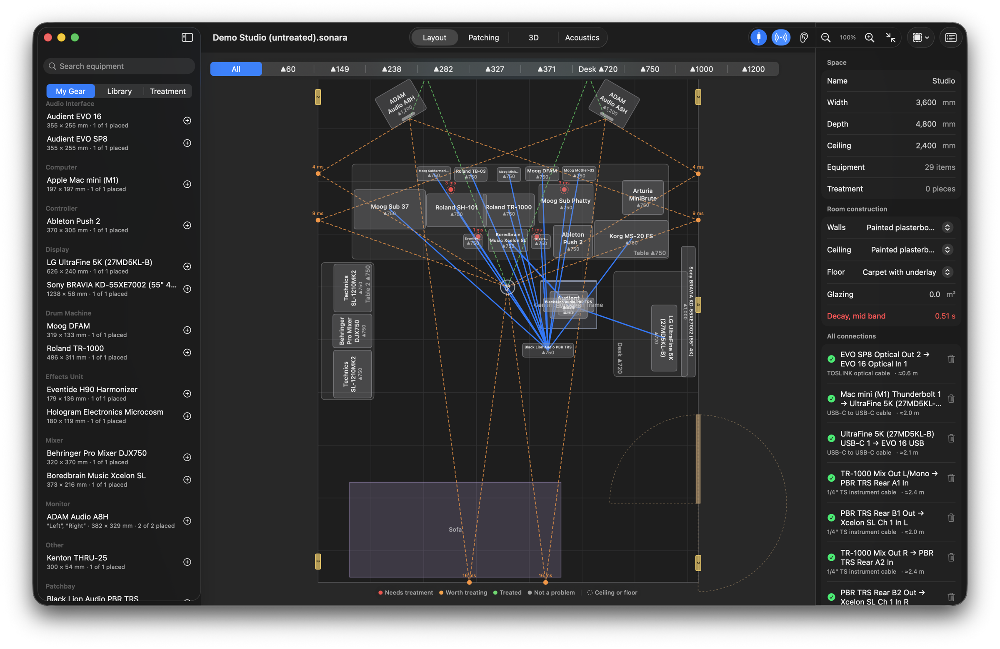
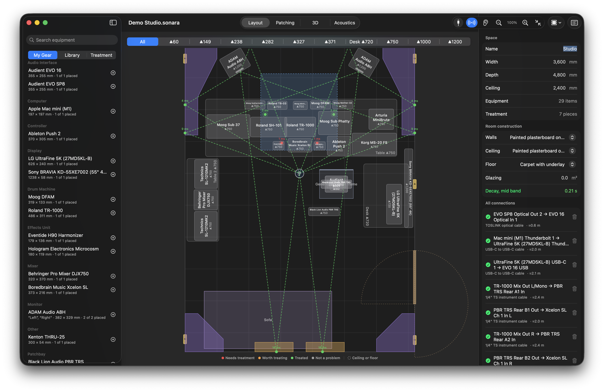
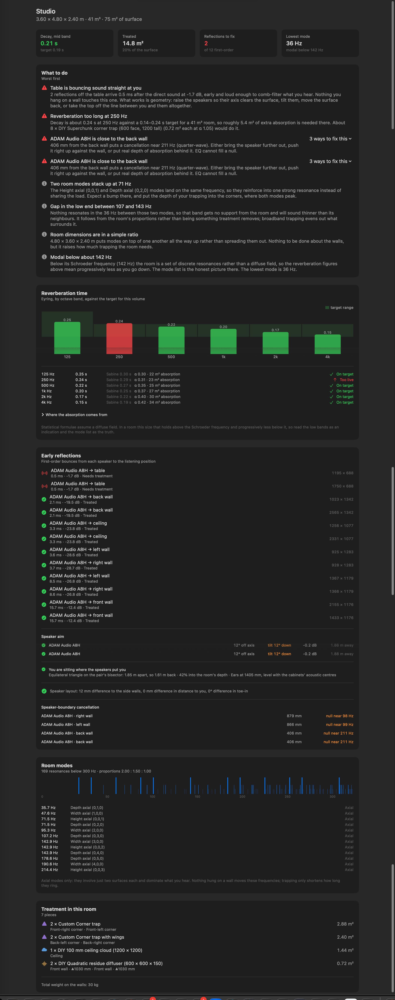
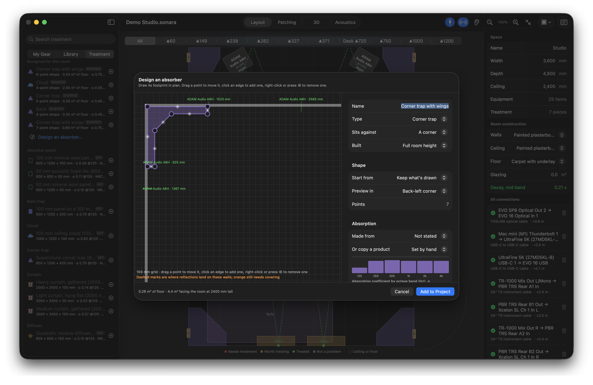
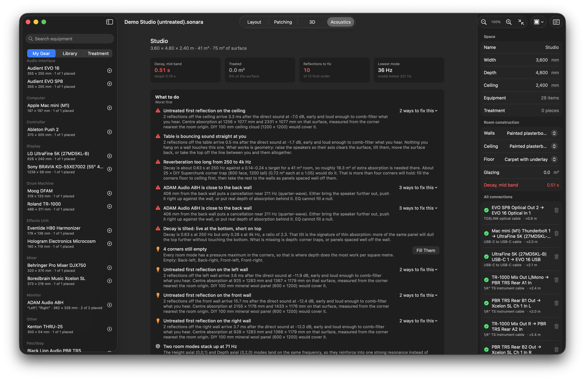
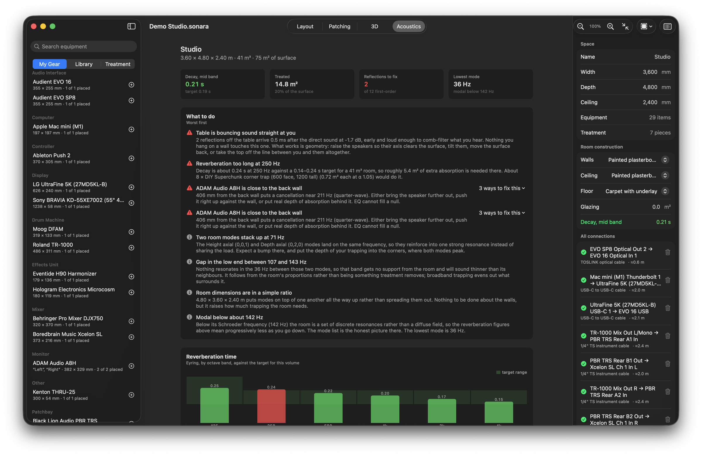
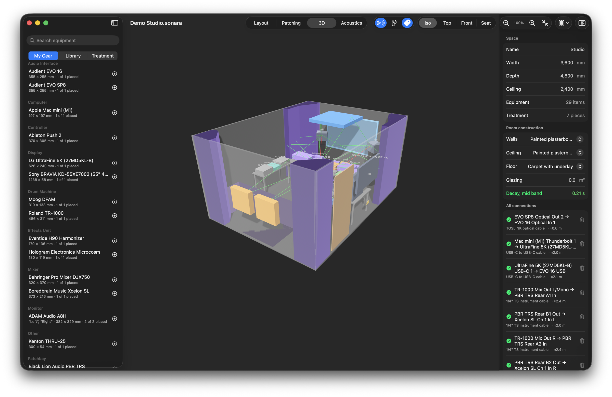
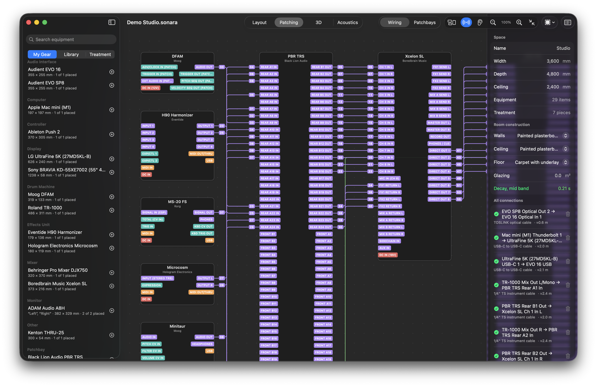
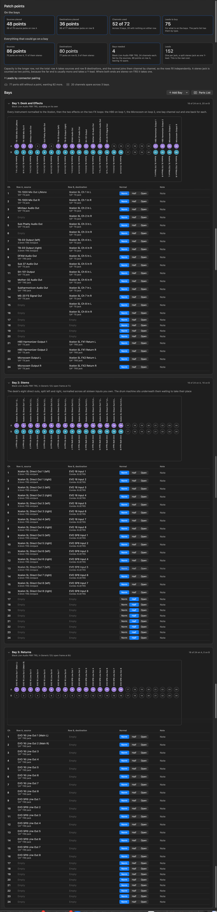
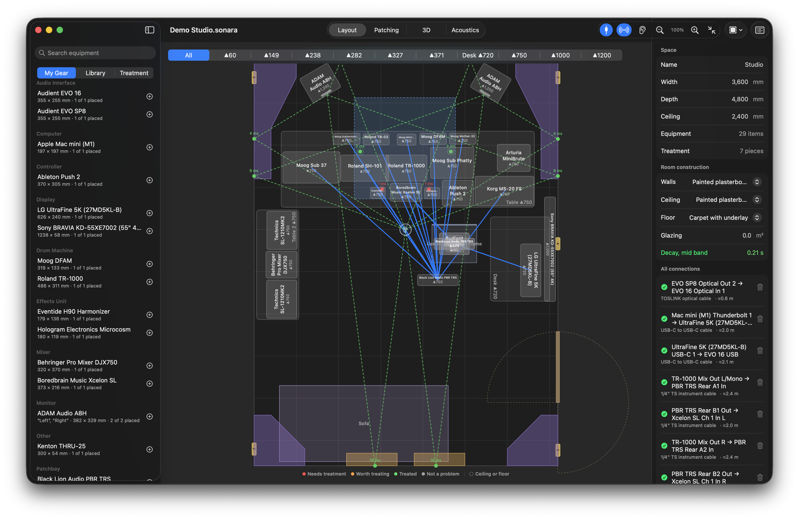

01Model
Model the room.
Draw it to scale: walls, ceiling, doors, windows, outlets and finishes. Put the desk, the monitors and the seat where they are, or where they might go. Every object knows its size.


Draw it to scale: walls, ceiling, doors, windows, outlets and finishes. Put the desk, the monitors and the seat where they are, or where they might go. Every object knows its size.

Room modes, reverberation per octave band, every first reflection and where it lands, speaker-boundary cancellations, and a worst-first list of what to do about each with the fix attached.

ScrollHang panels where the reflections land, fill the corners, float a cloud. Or draw an absorber to the shape of the corner, give it a fill and a thickness, and its absorption is worked out from the material.

The figures update as you place each piece. The same room, before and after: decay against target, treated area, reflections still to fix.


Treatment on the walls and in the corners, the gear where it stands, reflections traced through the space.

Drag an output to an input. Connector, gender and level are validated. A pad, a DI or a converter is suggested where one is needed, and anything that would damage gear is refused.

Sources on row A, destinations on row B. Sonara counts the points, tells you how many bays that is, and lets you lay every channel out with its normal. The schedule and the cable runs follow from the design.

ScrollMark what you own once. The library filters down to your gear, with a nickname for each unit and a count of what is placed, so the room is built from what is actually in it.
